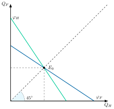
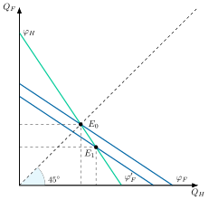
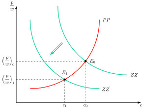
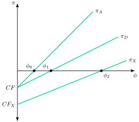
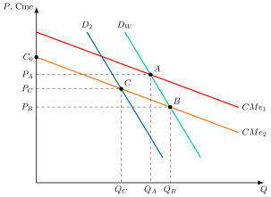

Apuntes para la oposición al Cuerpo de Diplomados Comerciales del Estado
15 Teoría del comercio internacional (II): nueva teoría del comercio internacional. Especial referencia a la competencia imperfecta, los rendimientos crecientes y la heterogeneidad empresarial.
Tema pendiente de revisión. Este tema está publicado pero aún no lo he revisado a fondo: puede contener erratas o partes por pulir.
15.1 Introducción  1'
1'
Según los últimos datos de la UNCTAD, el comercio mundial alcanzó un récord de 35 billones de dólares en 2025, con un crecimiento de alrededor del 7,5 % (2,5 billones de dólares), impulsado sobre todo por el comercio de bienes y por las economías en desarrollo de Asia Oriental y África, aunque la fragilidad aumenta en 2026 en pleno conflicto geopolítico.1
Sin embargo, si tal y como afirmaba la teoría tradicional del comercio la ventaja comparativa bien tecnológica –modelo de Ricardo– o bien factorial –modelo H-O-S– explicaba el comercio entre naciones, ¿cómo se puede entender que entre una cuarta parte y la mitad de los intercambios comerciales, según el nivel de desagregación, sean de carácter intraindustrial?2 ¿Y por qué algunas empresas exportan mientras otras, en el mismo país y sector, no lo hacen? ¿Puede el comercio internacional generar innovación, mejorar la productividad o incluso redefinir quién sobrevive en el mercado?
Para responder a estas preguntas hay que abandonar los supuestos de competencia perfecta, rendimientos constantes y empresas idénticas. Es lo que hace la nueva teoría del comercio internacional, que se apoya en tres ideas: la competencia imperfecta, los rendimientos crecientes y la heterogeneidad empresarial. Desde Smith y Ricardo hasta Krugman y Melitz, la teoría del comercio ha evolucionado para responder a un mundo más complejo. En un entorno incierto como el actual, estos desarrollos teóricos permiten formular políticas económicas más sólidas, integrando flexibilidad, dinamismo productivo y adaptación estructural ante disrupciones globales.
Por consiguiente, el objeto de la presente exposición será explicar los nuevos desarrollos de la teoría del comercio internacional a través del siguiente esquema:
Modelos neotecnológicos, que refinan las ideas clásicas.
Nueva teoría del comercio internacional.
Novísima teoría del comercio internacional.
Otros desarrollos.
15.2 Modelos neotecnológicos 2'
Los modelos neotecnológicos retoman el papel de las diferencias en las condiciones tecnológicas a nivel internacional como fuente de la ventaja comparativa y del comercio internacional, convirtiendo a los procesos de generación y transmisión de tecnología en una variable endógena del modelo. Por lo tanto, el progreso tecnológico, definido como la incorporación material al proceso productivo de nuevo conocimiento, pasa a primer plano.
Dentro de estas teorías dos referencias básicas son el modelo tecnológico de Posner y el modelo de ciclo de vida del producto de Vernon y Hirsch.
Modelo de desfase tecnológico
Posner (1961) plantea que la existencia de desfases en la innovación es determinante para el comercio internacional, incluso entre países con idénticas preferencias y dotaciones. Define así:
Desfase de imitación, es el periodo que transcurre desde que se introduce una nueva tecnología en un país hasta que se incorpora en el resto de países.
Desfase de demanda, que comprende el periodo que transcurre desde que se desarrolla un nuevo producto hasta que surge demanda en el resto de países.
El comercio internacional dependerá de la duración relativa de estos dos desfases:
Si desfase demanda > desfase imitación, los productores del segundo país imitarán la innovación antes de que surja la demanda y, por tanto, no se generará comercio internacional. Éste sería el caso de innovaciones muy simples o en países con líneas de innovación muy parecidas.
Si desfase imitación > desfase demanda, existirá comercio internacional ya que aparece demanda en otro país antes de que los productores locales puedan satisfacerla, de tal modo que esta nueva demanda será atendida por el comercio internacional.
Conclusiones
El progreso técnico es, pues, la fuente de la ventaja comparativa y, por tanto, del comercio internacional, aun cuando los países tengan preferencias y dotaciones relativas de factores idénticas. Cuando la innovación se extiende, el comercio internacional desaparece. Sin embargo, el progreso tecnológico es continuo (“idea de la destrucción creativa”) y siempre están apareciendo nuevas innovaciones que favorecerán un progreso continuo.
La teoría del ciclo de vida del producto
Para Vernon (1966) y Hirsch (1967), los flujos del comercio internacional dependen de la etapa del ciclo de vida en que se encuentra el producto, porque el lugar de producción cambia a medida que el producto madura y se estandariza.3 De este modo, distinguen tres etapas:
Etapa inicial: en la primera etapa se desarrolla y fabrica un producto nuevo. Esta fase habitualmente tiene lugar en un país desarrollado, ya que el proceso de desarrollo de nuevos productos exige un elevado gasto de I+D, lo que requiere mano de obra cualificada, más abundante en países desarrollados. Además, la existencia de incertidumbre sobre el resultado del proceso de desarrollo del producto exige que empresas con elevada capacidad productiva asuman elevados riesgos, por lo que prefieren mantenerse cerca de sus mercados para reducir en parte los riesgos existentes. En cuanto a la demanda, serán los consumidores de renta alta, con demanda poco elástica al precio, los que estén dispuestos a pagar los precios altos de los productos en esta etapa, debido tanto a los costes altos de producción como a la existencia de estructuras no competitivas como oligopolio o monopolio. En esta primera etapa de la vida del producto, el comercio internacional es reducido, la producción se centra en la demanda interna y, por tanto, la política comercial se centraría en la información sobre mercados y en la formación de mano de obra cualificada.
Etapa de madurez del producto: la segunda etapa se produce con la maduración del producto, lo que implica que se incrementa la demanda y que la tecnología es ya conocida. De esa forma, hay una estandarización en la producción y se alcanza un mejor aprovechamiento de las economías de escala, reduciéndose el precio y enfrentándose las empresas a una demanda más elástica. Además, se reducen los riesgos e incertidumbres de producción, por lo que se empieza a producir en otros países, aunque todavía se requieren consumidores de renta alta y personal cualificado, de modo que la producción se lleva fundamentalmente a otros países desarrollados mediante la inversión extranjera directa. El comercio internacional se caracteriza porque se vende un porcentaje creciente de producción al exterior y existe comercio intraindustrial.
Etapa de estandarización del producto: en la tercera etapa el producto y la tecnología están completamente estandarizados y disponibles y no se requiere trabajo cualificado, con lo que la oferta es muy elástica. Por ello se desplaza la producción a países en desarrollo que habitualmente son abundantes en trabajo y con menor coste y el país innovador pasa a ser importador del producto. Se lleva a cabo inversión en el exterior y, por lo tanto, la política comercial se debería dirigir a apoyar la presencia en el exterior4. Se produce en distintos países y se aprovechan los beneficios de la división internacional del trabajo.
Conclusiones
Las diferencias de dotaciones factoriales determinan el patrón de comercio, pero dando lugar a una ventaja comparativa dinámica. De esta forma, dadas unas dotaciones factoriales, el patrón de comercio de los países irá cambiando a lo largo del tiempo, influido por el progreso técnico y el ciclo de vida de los productos5.
Implicaciones de política económica
Así, la política económica puede influir en el patrón de comercio mediante, por ejemplo, políticas de estimulación de I+D y de atracción de la inversión extranjera directa (IED)6.
Sin embargo, estos modelos siguen sin explicar el comercio intraindustrial.
15.3 Nueva teoría del comercio internacional 8'
Por ello surgen nuevos modelos que tienen en cuenta la interdependencia estratégica y la competencia imperfecta como fuente del comercio internacional y que explican fenómenos como el comercio internacional entre países idénticos.
Comportamientos estratégicos
Comenzando por los modelos oligopolísticos, en ellos el comportamiento de las empresas puede crear comercio internacional en ausencia de ventajas comparativas y de economías de escala, lo que explica el comercio intraindustrial entre países idénticos sin costes de transporte.
Brander y Krugman (1983) proponen un modelo con
Dos países idénticos.
En cada país existe un productor, con una función de costes igual a la del otro.
Ambos compiten en cantidades del mismo bien al estilo Cournot –es decir, ambos escogen el nivel de producción que maximiza sus beneficios haciendo un supuesto sobre cuánto producirá el otro, y dejando que los precios se ajusten posteriormente–, y con una demanda idéntica en cada país.
Los mercados de los dos países están segmentados, de modo que cada empresa decide por separado cuánto vende en cada uno.
Análisis matemático
Se analiza el mercado del país doméstico (el del otro país es simétrico). La demanda inversa, lineal, es \(p=a-b\left(Q_{H}+Q_{F}\right)\), donde \(p\) es el precio, \(Q_{H}\) la cantidad que vende en ese mercado la empresa nacional, \(Q_{F}\) la que vende la extranjera, y \(a\) y \(b\) parámetros positivos. La empresa nacional produce con un coste marginal constante, \(c\), y la extranjera, que exporta, con un coste marginal \(\tau c\), donde \(\tau\geq1\) es el coste de tipo iceberg de llevar el bien al otro país (con \(\tau=1\) no hay costes de transporte). Cada empresa elige su cantidad para maximizar su beneficio, tomando como dada la de la otra: \[\pi_{H}=\left(p-c\right)Q_{H},\quad\pi_{F}=\left(p-\tau c\right)Q_{F} \tag{15.1}\] Las condiciones de primer orden de estos problemas dan las funciones de reacción de las dos empresas, \(\varphi_{H}\) y \(\varphi_{F}\).7
Análisis gráfico
Gráficamente, en un plano de cantidades producidas de la empresa nacional, \(Q_{H}\), y de la empresa extranjera, \(Q_{F}\), como el de la Figura 15.1, se representan las funciones de reacción de ambas empresas, \(\varphi_{H}\) y \(\varphi_{F}\). Así:
Sin costes de transporte (\(\tau=1\)), las dos empresas tienen el mismo coste marginal y las funciones de reacción son simétricas y decrecientes: cada empresa produce menos cuanto más produce la rival.
Si se supone simetría en la toma de decisiones, ambas empresas se repartirían el mercado formando un duopolio de Cournot. El equilibrio, \(E_{0}\), se encontraría en la bisectriz y sería un equilibrio de Cournot-Nash.
Cada empresa vende también en el mercado del otro país porque, con una cantidad cero allí, su ingreso marginal supera a su coste marginal, ya que el rival no ocupa todo el mercado.
Por lo tanto, el modelo muestra que no es necesario que existan ventajas comparativas o economías de escala para justificar el comercio internacional.

Modelo con coste de transporte
Sin embargo, con la existencia de costes de transporte que se suponen de tipo iceberg8, el análisis cambia. Gráficamente, en un plano de cantidades como el de la Figura 15.2, se representan la función de reacción de la empresa nacional, \(\varphi_{H}\), y la de la empresa extranjera antes, \(\varphi_{F}\), y después, \(\varphi^{\prime}_{F}\), de incorporar los costes de transporte. Así:
El coste marginal de la empresa extranjera pasa de \(c\) a \(\tau c\), por lo que su función de reacción \(\varphi_{F}\) se desplaza hacia el origen. La de la nacional, \(\varphi_{H}\), no cambia.
En el nuevo equilibrio, \(E_{1}\), en el mercado doméstico aumenta la cantidad vendida por el empresario doméstico y disminuye la del empresario extranjero, y esta cae más de lo que aumenta aquella.9
Dumping recíproco
El efecto neto es una caída de la producción mundial, ya que la producción del empresario extranjero cae más de lo que aumenta la del doméstico, y por tanto el nuevo precio será mayor. El dumping recíproco es la situación en la que cada empresa vende en el mercado extranjero a un precio neto de costes de transporte menor que el que obtiene en su mercado, aunque el consumidor pague en cada mercado el mismo precio a ambas empresas.10
Beneficios del comercio intraindustrial
Cabe preguntarse hasta qué punto es beneficioso este comercio intraindustrial, ya que se incurre en costes de transporte para comerciar bienes idénticos.
De no existir este comercio, la empresa doméstica operaría en régimen de monopolio y produciría menor cantidad a un precio mayor.
El efecto neto sobre el bienestar dependerá de si la mayor competencia producida por el dumping recíproco compensa los recursos empleados en costes de transporte. En el ejemplo numérico, el comercio mejora el bienestar siempre que los costes de transporte no sean demasiado elevados.11
Además, el marco del oligopolio de Cournot ha permitido analizar argumentos a favor de la política comercial estratégica, como en el modelo de Brander y Spencer (1985), en el que un gobierno subvenciona a su empresa exportadora que compite en cantidades con una extranjera en un tercer mercado.

Competencia monopolística
La competencia monopolística es una estructura de mercado con muchas empresas que producen variedades diferenciadas, cada una con poder de mercado sobre la suya, y con libre entrada, que anula los beneficios.12 Los modelos de este tipo se basan en 2 supuestos fundamentales:
Rendimientos crecientes que dan lugar a economías de escala internas a la empresa13.
Demanda de bienes diferenciados14.
Estos elementos darán lugar a una estructura de mercado de competencia monopolística, y en última instancia, a comercio internacional incluso en ausencia de ventaja comparativa. Además, este modelo permitirá explicar el comercio intraindustrial.15
Supuestos
El modelo que inicia con estos desarrollos es el de Krugman (1979), el cual se basa en los siguientes supuestos:
Existe un número fijo \(L\) de consumidores –que son a su vez trabajadores–. Su utilidad aumenta con el número de variedades consumidas y viene dada por una función aditiva \[U=\sum\limits_{i=1}^{n}u\left(c_{i}\right) \tag{15.2}\] donde la utilidad de cada variedad es creciente y cóncava en su consumo, es decir, con primera derivada positiva y segunda derivada negativa. Es la misma función para todas las variedades, por lo que es simétrica sobre ellas.
Cada consumidor recibe una renta salarial \(w\), por lo que la restricción presupuestaria \[w=\sum\limits_{i=1}^{n}p_{i}\cdot c_{i} \tag{15.3}\]
La elasticidad de la demanda de una variedad, \(\eta_{i}\), es positiva (en valor absoluto, mayor que 1) y se supone decreciente en el consumo per cápita de esa variedad: cuanto más se consume de una variedad, menos sensible es el consumidor a su precio.
Cada empresa supone que su decisión no altera las de las demás (variación conjetural nula), por lo que no hay interdependencia estratégica.
Existen \(n\) empresas que producen bienes diferenciados entre sí y cada una de ellas tiene poder de mercado sobre su propio producto (curva de demanda con pendiente negativa y elevada elasticidad). Además, existe libertad de entrada y salida, lo que evita beneficios extraordinarios.
Por el lado de la producción, el trabajo es el único factor productivo y cada empresa requiere una cantidad de trabajo para poder producir \[L_{i}=\alpha+\beta\cdot y_{i}\] donde \(\alpha\) es un coste fijo laboral mientras que \(\beta\) representa un coste marginal16.
Supuesto heroico: existe un precio común para toda la industria, debido a que:
Las curvas de demanda a las que se enfrenta cada empresa son idénticas, pues las preferencias están equitativamente distribuidas.
Las curvas de costes de cada empresa también son idénticas.
Equilibrio
Por otro lado, en la competencia monopolística existen 2 condiciones de equilibrio para las empresas:
La primera es que cada empresa maximice sus beneficios, curva \(PP\)17, es decir, ingreso marginal igual al coste marginal \[Img=CMg:\quad\dfrac{p}{w}=\beta\left(\dfrac{\eta}{\eta-1}\right),\quad\text{Curva }PP \tag{15.4}\]
La segunda, debido a la existencia de beneficios en el corto plazo, la libre entrada hace que los beneficios sean normales –es decir, 0–, curva \(ZZ\)18, por lo que los precios se igualan al coste medio. \[P=CMe:\quad\dfrac{p}{w}=\dfrac{\alpha}{L\cdot c}+\beta,\quad\text{Curva }ZZ \tag{15.5}\] Además, se tiene en cuenta que el equilibrio es simétrico, es decir, que los precios y cantidades son las mismos en cada variedad, retirándose el subíndice \(i\).
Por su parte, para determinar el número de variedades de equilibrio \(N\) se plantea la condición de pleno empleo teniendo en cuenta que existe vaciado de mercado \[L=\sum\limits_{i=1}^{n}L_{i}=\sum\limits_{i=1}^{n}\left(\alpha+\beta\cdot y_{i}\right)=N\left(\alpha+\beta\cdot y\right)=N\left(\alpha+\beta\cdot L\cdot c\right) \tag{15.6}\] reorganizando se obtiene que el número de variedades, \(N\), depende negativamente del consumo per cápita, \(c\), y positivamente del tamaño de mercado, \(L\). \[N=\dfrac{1}{\alpha/L+\beta\cdot c} \tag{15.7}\]
Análisis gráfico
Gráficamente, en un plano de precio/salarios, \(\frac{p}{w}\), y consumo individual, \(c\), como el de la Figura 15.3, se representan las curvas \(PP\) y \(ZZ\). Así:
La curva \(PP\), que representa la condición de maximización de beneficios, que tendrá pendiente positiva ya que al aumentar el consumo disminuirá la elasticidad y aumentará la ratio precio/salarios
La curva \(ZZ\), que representa la condición de beneficios normales, es la curva de costes medios, con pendiente negativa ya que a mayor consumo mayor aprovechamiento de las economías de escala.
La intersección de estas 2 curvas determina los valores de equilibrio.
Por lo tanto:
Si se introduce comercio internacional, el mercado se amplía como si aumentara el número de consumidores-trabajadores, \(\uparrow L\), es decir, el tamaño de mercado. Esto desplaza la curva \(ZZ\) hacia abajo, \(ZZ^{'}\), de modo que, a lo largo de la curva \(PP\), se reduce el consumo individual, \(\downarrow c\), y baja la ratio precio/salario, \(\downarrow\frac{p}{w}\), es decir, aumenta el salario real, \(\uparrow\frac{w}{p}\).
La caída del consumo per cápita, \(\downarrow c\), se debe a que los individuos reparten su gasto entre más variedades, \(\uparrow N\). Al consumir menos de cada una, la demanda de cada variedad se vuelve más elástica, \(\uparrow\eta\), y las empresas reducen su margen, por lo que baja la ratio precio/salario, \(\downarrow\frac{p}{w}\) o, lo que es lo mismo, sube el salario real, \(\uparrow\frac{w}{p}\). Además, la producción de cada empresa, \(y=L\cdot c\), aumenta, lo que permite aprovechar mejor las economías de escala.
El resultado es que, a través de una disminución del consumo individual, \(\downarrow c\), y del aumento del tamaño del mercado, \(\uparrow L\), aumentará el número global de variedades, \(\uparrow N\), por lo que aumentará la utilidad de los consumidores ya que podrán consumir más variedades.
Número de variedades y efectos
No obstante, el número de variedades producidas en cada país cae con la apertura al comercio internacional. Esto implica 2 efectos:
Efecto escala: cualquier empresa que produzca tanto en autarquía como con comercio internacional venderá más con comercio internacional y reducirá su coste medio –el beneficio seguirá siendo cero–.
Efecto reducción del número de empresas: tras la apertura, el número de empresas de cada país es menor que en autarquía y algunas dejan de producir. Como todas son idénticas, el modelo no determina cuáles. Que salgan las menos productivas es el resultado del modelo de Melitz.

Por lo tanto, el comercio internacional surge de la estructura de mercado caracterizada por la preferencia por la variedad (que hace que los individuos obtengan una mayor utilidad cuantas más variedades consuman) y por las economías de escala internas a la empresa (que hace que sea más barato producir todo en la misma planta).
Resultados
Así, mediante el comercio internacional de diferentes variedades (es decir, comercio intraindustrial), bajan los costes medios ya que se aprovechan las economías de escala, cayendo los precios19:
Cae el número de empresas de cada país, y el total mundial es menor que la suma de las que había en autarquía en ambos países, aunque mayor que en cualquiera de ellos por separado: cada país se especializa en un número menor de productos (es decir, el número de empresas en el país cae) ya que no tiene que producir todas las variedades al ser proporcionadas muchas de ellas por las empresas del resto del mundo. Se evitan, pues, duplicidades.
Caen los precios: Efecto renta (aumento del poder adquisitivo del consumidor)
Aumenta el número de variedades a las que tienen acceso los consumidores: al abrirse al comercio internacional los consumidores tendrán acceso a todas las variedades existentes.
Como consecuencia, el comercio internacional ofrece una ganancia mutua incluso en ausencia de ventaja comparativa (es decir, incluso cuando los países no difieren en sus recursos, en su tecnología o en sus preferencias). Además, en este modelo, con un solo factor, no hay efectos redistributivos entre los factores productivos (hay ganancias para todos salvo para las empresas que salen del mercado, y a nivel agregado solo hay ganancias).
Implicaciones de política económica
Esto tiene implicaciones en política económica: fomento de la I+D, así como la introducir competencia en los sectores y prepararlos para la apertura comercial para evitar la pérdida de empresas.
Inconvenientes del modelo
Sin embargo, el modelo analizado no aclara el patrón de comercio ya que, aunque la competencia monopolística da cabida a más empresas, no determina dónde se sitúan dichas empresas20. Tampoco especifica qué empresas abandonan el mercado, lo que se tratará más adelante en el modelo de Melitz.
Home-market effect
Por ello el propio Krugman (1980) modificó su modelo anterior introduciendo costes de transporte. Con costes de transporte, a la empresa que produce una variedad concreta le interesará mover su producción hacia el mayor mercado, de modo que minimice dichos costes de transporte. Este efecto se denomina efecto mercado interno –home-market effect–: el país con mayor demanda de un bien tiende a producirlo más que proporcionalmente y a convertirse en exportador neto. Exige economías de escala y costes de transporte.
De esta manera, Krugman concluye que los países tenderán a exportar aquellos bienes para los cuales tienen un mercado interno relativamente grande. Esto se debe a que las empresas de dicha variedad se habrán instalado en ese país precisamente para aprovechar esa mayor demanda, y desde dicho país exportarán.
Hipótesis de la estandarización
Otro resultado interesante es la “Hipótesis de la estandarización de Drèze” (1960), que señala que, si los países pequeños quieren aprovechar las economías de escala, no podrán basar su producción de bienes en los gustos típicos nacionales (ya que la demanda sería demasiado pequeña). Por tanto, estos países tendrán que producir bienes que estén estandarizados internacionalmente (es decir, atender a los gustos mundiales). El resultado es que:
Los países pequeños se especializarán en bienes estandarizados u homogéneos, cuya demanda es similar en todos los países.
Los países grandes tendrán ventaja comparativa en bienes diferenciados, adaptados a los gustos nacionales, porque solo un mercado interior grande permite aprovechar en ellos las economías de escala.
Por tanto, los países pequeños estarán invadidos por bienes extranjeros, mientras que en los países grandes coexistirán bienes nacionales y extranjeros.
Evidencia empírica
Por otro lado, las dos grandes implicaciones del modelo, el comercio intraindustrial y los efectos escala y selección, han sido testadas empíricamente en la literatura.
Respecto al comercio intraindustrial, se recurre normalmente a 2 índices de referencia para su medición:
Índice de Balassa (1966) se mide por el grado en que las exportaciones en una determinada industria son compensadas por las importaciones en la misma industria: \[IB_{i}=\dfrac{\left|X_{i}-M_{i}\right|}{X_{i}+M_{i}} \tag{15.8}\] que estará comprendido entre 0 y 1 y mide en qué medida las exportaciones de un bien \(i\) son compensadas por las importaciones de ese bien. Si toma el valor 0 hay un comercio intraindustrial equilibrado, ya que las importaciones del bien \(i\) se igualan a las exportaciones. Por el contrario, si toma el valor 1, no existe comercio intraindustrial, ya que o bien las exportaciones de \(i\), o bien las importaciones de \(i\) son nulas.
La operación se lleva a cabo para cada industria, y posteriormente se lleva a cabo una media aritmética para obtener el índice global para un país.21Índice de Grubel y Lloyd (1975) se diferencia del índice de Balassa en dos aspectos:
Grubel y Lloyd critican la fórmula de Balassa porque argumentan que no se puede calcular el índice de un país como la media simple del de sus diferentes industrias, porque no todas tienen el mismo peso en el comercio total de dicho país.
Es el complementario del índice de Balassa, de forma que el índice aumenta con el comercio intraindustrial. \[IGL_{i}=\left(1-IB_{i}\right)\cdot100 \tag{15.9}\] por lo que si \(IGL=0\) no hay comercio intraindustrial y si \(IGL=100\) todo el comercio es intraindustrial (lo cual es más intuitivo)
Además, la media que se hace con los valores de cada industria es una media ponderada (por el peso del comercio de cada industria en el total de comercio), no aritmética.
Llevando estos índices a datos, dependiendo del nivel de desagregación industrial utilizado, el comercio intraindustrial explica entre un 25 % y un 50 % del comercio internacional. Además, entre la variedad de trabajos existentes, el de Greenaway y Milner (1986) señala que el comercio intraindustrial será mayor entre:
Economías desarrolladas, donde la variedad se aprecia más.
Economías grandes, por las mayores posibilidades para la diferenciación.
Economías con gustos similares.
Economías físicamente próximas, porque la cultura y gustos son similares.
Respecto al efecto escala y al efecto selección (la salida de las empresas menos productivas, que se estudia en el modelo de Melitz), la literatura empírica no ha encontrado una evidencia fuerte sobre el primero y sí sobre el segundo. Buena parte de los estudios se han centrado en analizar el tratado de libre comercio que tuvo lugar entre Canadá y Estados Unidos en 1989.
Concretamente, Trefler (2004) encontró que en las industrias canadienses con los mayores recortes de aranceles el empleo cayó un 12 % y la productividad laboral aumentó un 15 %, a medida que se contraían las plantas de baja productividad. Es decir, el aumento de la productividad se debió a un trasvase de recursos desde empresas menos productivas a otras más productivas, un efecto selección. En las industrias que recibieron los mayores recortes arancelarios de Estados Unidos no hubo ganancias de empleo, pero la productividad laboral de las plantas aumentó un 14 %.
Empresas multiproducto y producción en varios países
En el modelo visto hasta ahora, suponemos que cada empresa fabrica un único producto y lo produce en un único país.
Esto no es realista, pues, en la práctica, las empresas producen más de una variedad y, a menudo, en más de un país.
Este aspecto de la realidad se recoge en modelos que parten de costes de comerciar entre países. Estos costes implican que cada mercado está protegido parcialmente de la competición extranjera.
De este modo, tal y como argumentan Baldwin y Ottaviano (2001), para una empresa sería óptimo abrir una planta de producción en el extranjero, produciendo una variedad diferente. Gracias a la segmentación de mercado causada por los costes de comerciar, esta estrategia permite a la empresa ganar cuota de mercado sin generar demasiada competición con la variedad que produce domésticamente. Sin embargo, esto no implica que no exista comercio intraindustrial. De hecho, la variedad producida en el extranjero por la empresa nacional es vendida en el extranjero y domésticamente como cualquier otra variedad.
En suma, permitir empresas multiproducto y producción en varios países añade realismo y no elimina el comercio intraindustrial entre países idénticos.
15.4 Novísima teoría del comercio internacional 5'30"
No obstante, los modelos hasta ahora expuestos no pueden explicar 3 hechos de la evidencia empírica
Solo unas pocas empresas exportan.
Las empresas que exportan son diferentes del resto, es decir, suelen ser más grandes, más productivas, más intensivas en capital y en mano de obra cualificada, y pagan mayores salarios22.
La apertura comercial aumenta la productividad del país.
Para explicar estos hechos surge la novísima teoría del comercio internacional, que incorpora la heterogeneidad de las empresas, con distinta productividad, y explica el comercio a partir de las decisiones de cada una. Esto supone un cambio de paradigma: la pregunta ya no es “por qué los países comercian”, sino “por qué las empresas comercian”.
Modelo de Melitz
El trabajo pionero de esta corriente es el de Melitz (2003) que extiende el modelo de competencia monopolística de Krugman, del que difiere en dos aspectos:
Las empresas son heterogéneas en términos de productividad, concretamente en el \(CMg\), que es igual a \(1/\phi\), con el salario normalizado a 1, donde \(\phi\) es la productividad. Para entrar en el mercado, cada empresa paga un coste de entrada hundido y solo entonces descubre su productividad, que sortea de una distribución común. Una vez conocida, decide si produce o sale del mercado.
La actividad de exportación supone un coste fijo, \(CF_{X}\), además del coste de transporte de tipo iceberg, \(\tau\). Este coste fijo refleja las actividades de prospección, segmentación y promoción que la empresa tiene que llevar a cabo en el mercado extranjero antes de exportar. Como los beneficios crecen con la productividad, solo exportan las empresas más productivas.
Supuestos
De esta forma, los supuestos del modelo son los siguientes:
Demanda CES, con elasticidad de sustitución constante entre variedades, \(\sigma>1\). A diferencia de Krugman (1979), la elasticidad de la demanda no depende del consumo y cada empresa fija un margen constante sobre su coste marginal. El resto de supuestos son los de Krugman: el trabajo es el único factor, cada empresa produce una variedad y hay libre entrada.
Heterogeneidad productiva de las empresas: las empresas son heterogéneas en términos de productividad, por lo que la función de beneficios depende positivamente de la productividad, \(\phi\), negativamente de los costes fijos, \(CF\), y positivamente del nivel de precios, \(p\): \[\pi=f\big(\underbrace{\phi}_{+},\underbrace{CF}_{-},\underbrace{p}_{+}\big) \tag{15.10}\] En concreto, con demanda CES, el beneficio de una empresa en el mercado interior es \[\pi\left(\phi\right)=B\left(p\right)\cdot\phi^{\sigma-1}-CF \tag{15.11}\] donde \(B\left(p\right)\) es una constante positiva que crece con el nivel de precios de la industria, \(p\). El modelo distingue tres costes: el coste de entrada hundido, que se paga una vez para sortear la productividad, el coste fijo de producción, \(CF\), que se paga en cada periodo, y el coste fijo de exportación, \(CF_{X}\), que en Melitz es una inversión inicial para entrar en cada mercado extranjero y que se expresa como su pago amortizado en cada periodo, como en Melitz (2003).23
Condición de beneficio cero: la empresa marginal obtiene beneficios nulos. La productividad de corte, \(\phi^{*}\), es la productividad mínima con la que una empresa cubre sus costes fijos, es decir, la que cumple \(\pi\left(\phi^{*}\right)=0\). Las empresas con \(\phi<\phi^{*}\) salen del mercado.
Condición de libre entrada: el beneficio esperado de entrar, es decir, de sortear la productividad y sobrevivir, iguala al coste de entrada hundido. Esta condición, junto con la de beneficio cero, determina la productividad de corte. El número de empresas se deduce después del equilibrio del mercado de trabajo.
Exportación: los beneficios de exportar son \(\pi_{X}\left(\phi\right)=\tau^{1-\sigma}\cdot B\left(p\right)\cdot\phi^{\sigma-1}-CF_{X}\), y la productividad de corte para exportar es \[\phi^{*}_{X}=\phi^{*}\cdot\tau\cdot\left(\dfrac{CF_{X}}{CF}\right)^{\frac{1}{\sigma-1}} \tag{15.12}\] Si \(\tau^{\sigma-1}\cdot CF_{X}>CF\), entonces \(\phi^{*}_{X}>\phi^{*}\): solo una parte de las empresas que producen exporta.
Análisis gráfico
Gráficamente, en un plano de beneficios, \(\pi\), y productividad, \(\phi\), como el de la Figura 15.4, se representan las funciones de beneficios en autarquía, \(\pi_{A}\), con comercio, \(\pi_{D}\), y de exportación, \(\pi_{X}\). Por sencillez, se dibujan como rectas. Así, en autarquía:
La función de beneficios, \(\pi_{A}\), depende positiva y linealmente de la productividad.
Las empresas hacen frente a un coste fijo igual a \(CF\).
En el punto \(\phi_{0}\) se determina la productividad de corte en autarquía, \(\phi^{*}\): las empresas que estén por debajo de \(\phi_{0}\) salen del mercado nacional al obtener pérdidas. Por su parte, las empresas que estén por encima obtienen beneficios positivos.

Ante una apertura al comercio internacional:
Por un lado, la apertura abre oportunidades de beneficio a las empresas que pueden exportar y atrae nuevos entrantes. Su mayor demanda de trabajo eleva el salario real, es decir, baja el nivel de precios en relación con el salario, \(\downarrow p\), por lo que la función de beneficios en el mercado interior rota hacia abajo, \(\pi_{D}\). La productividad mínima para operar en el mercado interior, es decir, la nueva productividad de corte, \(\phi^{*}\), aumenta a \(\phi_{1}\). De esta forma se produce un efecto selección: las empresas entre \(\phi_{0}\) y \(\phi_{1}\) salen del mercado.
Por otro lado, las empresas que quieran exportar tienen que hacer frente a un nuevo coste fijo de exportación, \(CF_{X}\). Sus beneficios de exportar, \(\pi_{X}\), parten de \(-CF_{X}\) y crecen más despacio que \(\pi_{D}\), porque el coste de transporte, \(\tau\), reduce lo que se obtiene por cada unidad exportada. Así, solo podrán exportar aquellas empresas que tengan una productividad por encima de \(\phi_{2}\), es decir, de la productividad de corte para exportar, \(\phi^{*}_{X}\). Las empresas con productividad entre \(\phi_{1}\) y \(\phi_{2}\) venden solo en el mercado nacional.
Efectos
De esta manera, se producen los siguientes efectos:
Efecto selección: la competencia por el trabajo, que encarece el salario real, eleva la productividad de corte de \(\phi_{0}\) a \(\phi_{1}\) y las empresas menos productivas abandonan el mercado.24 El modelo de Melitz explica este efecto de una manera más apropiada que el de Krugman, donde todas las empresas son idénticas y el modelo no dice cuáles salen.
Efecto reasignación: las empresas más productivas, que además exportan, ganan cuota de mercado. Los recursos que estaban en las empresas menos productivas pasan a las más productivas, que los utilizan con más eficiencia, y la productividad agregada del sector aumenta con el comercio internacional.
Ausencia de efecto escala: a diferencia de Krugman (1979), con demanda CES el margen de las empresas es constante y no hay un efecto escala sobre los precios. La ganancia procede de la reasignación de recursos entre empresas, como muestra Melitz (2003).
Evidencia empírica
Así, este modelo permite explicar la evidencia empírica:
La existencia de estos costes fijos hace que solo las empresas más productivas exporten, lo que explica los hechos observados 1 y 2.25
La liberalización comercial va seguida de un aumento de la productividad, lo que explica el hecho 3.
Implicaciones de política económica
A su vez, este modelo tiene importantes implicaciones de política económica: la apertura proporciona ganancias a largo plazo, al reasignar recursos hacia las empresas más productivas, pero a la vez es necesario desarrollar políticas que acompañen los costes a corto plazo (políticas que fomenten incrementos de la productividad ex-ante a la apertura y políticas de acompañamiento).
Otros modelos con empresas heterogéneas
Bernard, Eaton, Jensen y Kortum (2003) explican hechos similares con un modelo ricardiano con competencia imperfecta, muchos países y barreras geográficas, que ajustan al comercio bilateral de EE.UU. con sus 46 principales socios. El modelo reproduce la dispersión de la productividad, la ventaja de productividad de las exportadoras, la pequeña proporción de plantas que exportan y su mayor tamaño.
Helpman, Melitz y Yeaple (2004) extienden el modelo de Melitz a la decisión de cómo atender un mercado exterior, exportando o abriendo una filial en el extranjero (inversión extranjera directa, IED). Exportar supone menos costes hundidos, pero más costes por unidad vendida, como el transporte y los aranceles. En equilibrio, solo las empresas más productivas sirven los mercados exteriores y, entre ellas, las más productivas lo hacen mediante IED.
Evidencia en España
En España la exportación está muy concentrada. Los 1.000 principales exportadores acumularon el 65,2 % del valor exportado en 2025, y los 7.517 exportadores de al menos 5 millones de euros, solo el 5,9 % de los 127.084 exportadores, el 91,3 %.26 Además, las exportadoras son más productivas: según el Banco de España, la productividad aparente del trabajo es casi un 60 % mayor que en las no exportadoras (Gutiérrez Chacón y Martín Machuca 2019, 18), y Minondo (2024, 10) recoge que además pagan un 40 % más en salarios.27
Modelo de Bernard, Redding y Schott
El modelo de Bernard et al. (2007) incorpora empresas heterogéneas al análisis de ventajas comparativas para estudiar cómo interactúan las características de los países, las industrias y las empresas ante la liberalización comercial. Extiende así el marco de Melitz (2003) con ventajas comparativas y estructura factorial entre países.
Supuestos básicos:
Dos países, dos factores, dos industrias.
Cada industria está compuesta por empresas que producen variedades diferenciadas.
Las empresas difieren en niveles de productividad.
Los países varían en abundancia relativa de factores y las industrias en intensidad factorial.
Al disminuir los costes de comercio, el modelo predice los siguientes efectos:
Reasignación de recursos: las empresas de baja productividad tienen más probabilidades de fracasar y las de alta productividad, de sobrevivir y crecer. Los recursos se desplazan hacia estas últimas, tanto dentro de cada industria como entre industrias, según la ventaja comparativa.
Productividad: el crecimiento relativo de las empresas más productivas eleva la productividad global de la industria. Esta aumenta más en las industrias con ventaja comparativa, porque en ellas hay relativamente más destrucción creativa.
Precios de los factores: la expansión de las exportadoras aumenta la demanda de factores y encarece los inputs, hasta que las empresas de baja productividad no cubren sus costes fijos y salen del mercado.28
Bienestar: la heterogeneidad amplifica la ventaja comparativa inicial y genera ganancias de bienestar adicionales. Además, la mejora de la productividad agregada amortigua, e incluso puede revertir, la pérdida de salario real del factor escaso.
Con empresas heterogéneas en el modelo de Melitz, Baldwin y Forslid (2010) encuentran además un efecto antivariedad: la liberalización puede reducir la variedad de productos consumida en un país, sobre todo si es pequeño. Este resultado coincide con la crítica antiglobalización de que la globalización homogeneiza el mundo y elimina especialidades locales.29
15.5 Otros desarrollos 3'
Para completar el cuadro, se presentan cuatro desarrollos que amplían el marco: las economías de escala externas, la ecuación de gravedad como regularidad empírica, la fragmentación de la producción en cadenas globales de valor y la nueva geografía económica.
Economías de escala externas
Las economías de escala externas se producen cuando el coste medio de producción de las empresas individuales se reduce a medida que aumenta el nivel de producción conjunto de la industria. Marshall y Marshall (1879, 52-53) ya describió las ventajas de la localización de la industria, pero fue en susPrinciples of Economics (1890) donde acuñó la distinción entre economías internas y externas, y las atribuyó a las ganancias de eficiencia debidas a la concentración geográfica en los llamados distritos o clusters industriales30.
Estas ganancias de eficiencia se generan por distintas razones:
La existencia de proveedores especializados dentro de un cluster industrial.
La especialización del mercado laboral, al concentrar trabajadores cualificados para la industria.
La mayor difusión del conocimiento al existir efectos desbordamientos, facilitados por la proximidad espacial.
Para analizar este concepto, se suponen 2 países, 1 y 2, que producen un bien. Dado que las economías de escala en la producción de un bien son enteramente externas a las empresas, la industria del bien en cada país está constituida por empresas pequeñas y en competencia perfecta, lo que presiona el precio hasta sus \(CMe\). Además, se supone que el país 2 tiene unos costes menores que el 1 –porque, por ejemplo, los salarios en el país 2 son mucho menores que en el país 1–.
Gráficamente, en un plano de precios y costes medios, \(P\), y cantidades, \(Q\), como el de la Figura 15.5, se representan las curvas de costes medios del país 1, \(CMe_{1}\), y del país 2, \(CMe_{2}\), y las demandas del mundo, \(D_{W}\), y del país 2, \(D_{2}\). Así:
Con la demanda mundial del bien, \(D_{W}\), en principio se esperaría que el país 2 abasteciera el mercado mundial en el punto \(B\), con un precio \(P_{B}\) y una cantidad \(Q_{B}\).
Sin embargo, por razones históricas el país 1 desarrolla primero su industria, de manera que el equilibrio se sitúa en \(A\), con un precio \(P_{A}\) y una cantidad \(Q_{A}\). Además, no hay producción inicial del país 2, ya que ninguna empresa individual de dicho país puede producir el bien dados los costes de producción iniciales, \(C_{0}\), que están por encima del precio establecido por la industria del país 1. Así, ninguna empresa del país 2 está dispuesta a dar el primer paso con esos precios y costes. Se produce así una especialización perversa: el país que desarrolla antes su industria captura todo el mercado aunque sea menos eficiente.
En definitiva, dado que las economías de escala son externas a la empresa, ninguna empresa las tiene en cuenta a la hora de tomar sus decisiones de producción, y la ventaja en costes del país 2 nunca se materializará31. No obstante, si se introduce la demanda del país 2, \(D_{2}\), podría producir dicho bien a un precio inferior al marcado por el país 1 en el punto \(C\), por lo que habría incentivos a proteger su industria frente a la competencia extranjera.
Este tipo de situaciones se ha utilizado para justificar la protección comercial mediante el argumento de la industria naciente. Sin embargo, como señala Bhagwati (1971), sería mejor actuar directamente sobre la distorsión. Algunos de los inconvenientes de dicho proteccionismo son los costes que genera, posible captura del regulador si la industria local presiona para que se mantenga el proteccionismo indefinidamente, ineficiencia X, problemas y dificultad de estimación de las curvas de cara a saber si la de un país está por encima o debajo de la de otro.
Tradicionalmente se ha exigido que el argumento de la industria naciente supere 2 pruebas, el test de Mill y el test de Bastable (Kemp 1960). Según el primero, la protección debe ser temporal y la industria debe madurar hasta poder sostenerse sin ella. Según el segundo, el valor actual de las ganancias futuras de la industria debe superar el de los costes de la protección.

Un caso relacionado son las economías de escala dinámicas, también llamadas curvas de aprendizaje, que hacen referencia al aumento de la productividad que se produce a través de la experiencia acumulada (Arrow 1962). Cuando una empresa individual mejora sus productos o técnicas de producción a través de la experiencia –learning by doing–, es probable que otras empresas la imiten y se beneficien de sus conocimientos. Se produce así un efecto “desborde” positivo del conocimiento, originando una reducción de costes a medida que el conjunto de la industria “absorbe” y acumula ese conocimiento. Como en las economías externas, la experiencia acumulada puede consolidar la ventaja del país que empieza a producir antes.
Modelos de gravedad
La ecuación gravitacional del comercio internacional fue propuesta por el holandés Jan Tinbergen (Tinbergen 1962), quien fuera laureado con el Premio Nobel de Economía. Tinbergen estudió física y se le ocurrió comparar el comercio entre países con la fuerza de gravedad entre objetos.
En economía, la ecuación gravitacional propone que los países con mayor PIB, o más cercanos entre sí, comerciarán más entre ellos. Tinbergen propuso que el comercio internacional entre dos países sigue un patrón similar a la ecuación gravitacional, donde el comercio internacional, \(CI_{i,j}\), es proporcional al tamaño de sus economías e inversamente proporcional a la distancia32 entre ellas:
\[CI_{i,j}=e^{\beta_{0}}\cdot\dfrac{Y^{\beta_{1}}_{i}\cdot Y^{\beta_{2}}_{j}}{D^{\beta_{3}}_{i,j}} \tag{15.13}\] donde \(Y_{i}\) e \(Y_{j}\) son los PIB de los países \(i\) y \(j\), \(D_{i,j}\) es la distancia entre ellos y \(\beta_{0}\), \(\beta_{1}\), \(\beta_{2}\) y \(\beta_{3}\) son parámetros que se estiman.
La ecuación se utilizó durante décadas sin un fundamento teórico claro. Hoy se deriva de modelos de competencia monopolística, como el de Krugman. Si cada país produce variedades distintas, las preferencias son idénticas y homotéticas y no hay costes de comercio, cada país gasta en las variedades de \(i\) una fracción igual a la cuota de \(i\) en la renta mundial. Las exportaciones de \(i\) a \(j\), \(CI_{i,j}\), son, por tanto, la cuota de \(i\) en la renta mundial por la renta de \(j\): \[CI_{i,j}=\dfrac{Y_{i}}{Y_{W}}\cdot Y_{j}=\dfrac{Y_{i}\cdot Y_{j}}{Y_{W}} \tag{15.14}\] donde \(Y_{W}\) es la renta mundial. Anderson y van Wincoop (2003) añaden costes de comercio bilaterales y muestran que una ecuación de gravedad sin fundamento teórico sufre un sesgo por variables omitidas. El comercio entre \(i\) y \(j\) depende de esos costes en relación con los que cada país tiene con el resto del mundo, la llamada resistencia multilateral.33
En términos empíricos, el modelo se adapta bastante bien a los datos. No obstante, hay fenómenos que la ecuación básica no recoge:
Efecto Rotterdam: el comercio entre Holanda y EE.UU. parece mayor porque el puerto de Rotterdam actúa de puerto de entrada para toda la UE. Es un problema de medición del origen y del destino.
Efecto frontera: las fronteras nacionales reducen el comercio, por las formalidades que toman tiempo, la moneda y las barreras arancelarias. Anderson y Wincoop (2003) estiman que reducen el comercio entre países industrializados entre un 20 y un 50 %.
Factores culturales y lingüísticos: por ejemplo, Reino Unido comercia mucho más con EE.UU. debido a la fuerte presencia de americanos con descendencia británica.
Efecto Irlanda: Irlanda es la sede de numerosas multinacionales americanas en Europa debido no solamente a razones culturales –lenguaje común y una historia de migración– sino también a razones fiscales –impuesto de sociedades más reducido–.
Barreras comerciales, bloques comerciales y moneda común: afectan al comercio bilateral más allá del tamaño y la distancia.
Cadenas globales de valor34
Los modelos anteriores analizan el comercio de bienes finales. Sin embargo, en las últimas décadas las empresas han fragmentado la producción en etapas que se localizan en países distintos. Es lo que se conoce como cadenas globales de valor (CGV). Esta fragmentación ha sido posible gracias a los avances en las tecnologías de la información y la comunicación, la reducción de los costes de transporte y la liberalización comercial.
Un ejemplo paradigmático es el del iPhone: mientras el diseño y el software se desarrollan en Estados Unidos, los componentes se fabrican en países como China, Corea del Sur, Japón y Alemania. Estos inputs se ensamblan en China y luego se exportan a EE. UU., donde se realiza la distribución final (Palmieri, 2018).
Antràs y de Gortari (2020) desarrollan un modelo cuantitativo con etapas de producción secuenciales. Como enviar bienes es costoso, a una empresa no solo le importa el coste de producir cada etapa en un país, sino también su cercanía a las etapas anteriores y posteriores. Concluyen que, en igualdad de condiciones, conviene situar las etapas más cercanas al consumidor final, las más downstream, en los países más centrales. La geografía se convierte así en una fuente adicional de ventaja comparativa.
Antràs y Chor (2022) revisan la literatura sobre CGV desde dos perspectivas. El enfoque macro utiliza tablas input-output por país e industria para medir la participación en las CGV. El enfoque micro utiliza datos de empresa para analizar cómo fragmentan estas sus cadenas de valor.
En España, el contenido extranjero de las exportaciones pasó del 23,5 % en 2010 al 26,6 % en 2022, por debajo de la media de la OCDE (30,4 %).35
Implicaciones de política económica
Participar en las CGV obliga a pensar la ventaja comparativa por tareas y no por sectores completos. Interesan, por tanto, las políticas que mejoran las capacidades locales (infraestructura, formación técnica y marco regulatorio), que aprovechan la proximidad a los grandes mercados de consumo mediante acuerdos comerciales regionales y que atraen inversión extranjera directa. Además, Antràs y Chor (2022) destacan que las decisiones de política comercial deben considerar cómo afectan a las distintas etapas de producción y a los vínculos entre países.
Nueva geografía económica
Trata de explicar cómo los costes de transporte, demanda y otros factores afectan a la producción y patrón de comercio surgiendo una serie de teorías positivo-descriptivas.
Su inicio se atribuye a Krugman (1991b), que analiza los factores que determinan la localización de la producción utilizando para ello modelos matemáticos. Krugman (1991a, 1) definió la geografía económica como “la localización de la producción en el espacio; esto es, la rama de la economía que se ocupa de dónde ocurren las cosas unas en relación con otras”. Su punto de partida es que, si bien muchas actividades están geográficamente concentradas, ni todo el mundo vive en la misma ciudad, ni la producción de cada bien se concentra en una única localización.
Existe, por tanto, una guerra entre:
Fuerzas centrípetas: que tienden a concentrar la actividad económica: economías de escala positivas externas, aspectos positivos del mayor tamaño del mercado, puesto que aparecen proveedores especializados, por ejemplo.
Fuerzas centrífugas: que actúan en sentido opuesto, como economías de escala negativas externas, externalidades negativas.
Con estos supuestos, desarrollan modelos de equilibrio general y llegan a conclusiones sobre la localización derivadas de la “mano invisible” (no de un planificador): son las decisiones egoístas de los agentes las que llevan a la localización resultante de los modelos.
Así, analizan mediante modelos el papel de las fuerzas centrípetas, centrífugas y de los costes de transporte (iceberg cost), en la localización de la producción. El resultado depende de los costes de transporte. Cuando son altos, domina la fuerza centrífuga y la industria se reparte entre regiones. Cuando bajan por debajo de un umbral, dominan las centrípetas y la industria se concentra en una región. Suele haber equilibrios múltiples, de modo que pequeñas ventajas iniciales o la historia deciden qué región se convierte en centro.
El modelo básico es el de centro-periferia de Krugman (1991b), un modelo de equilibrio general de dos regiones y dos sectores en el que la localización de la agricultura es fija y las empresas manufactureras, en competencia monopolística, eligen dónde producir para maximizar sus beneficios. Se compone de:
Un sector agrícola en competencia perfecta, con trabajadores inmóviles repartidos entre las dos regiones, cuya demanda es la fuerza centrífuga que tiende a dispersar la industria.
Un sector industrial en competencia monopolística, con rendimientos crecientes y trabajadores móviles. Las empresas prefieren instalarse donde el mercado es mayor y los trabajadores donde hay más variedades, una causación circular que es la fuerza centrípeta.36
Sin embargo, el propio Krugman (1998, 15-16) reconoció que la nueva geografía económica, como la nueva teoría del crecimiento, había tenido más éxito planteando preguntas que respondiéndolas, y que había creado un lenguaje para discutir los problemas más que herramientas para resolverlos.
15.6 Conclusiones  30"
30"
Como conclusión, la sofisticación de las sucesivas teorías y modelos ha revelado nuevos canales por los que el comercio internacional afecta al bienestar: no solo la ventaja comparativa, sino también las economías de escala, la variedad y la reasignación de recursos hacia las empresas más productivas. Por ello, la respuesta a la pregunta “¿Mejora el comercio internacional el bienestar de un país?” es hoy mucho más matizada, pero sigue siendo favorable al libre comercio.
Esta lección está hoy más viva que nunca:
El comercio mundial alcanzó un récord de 35 billones de dólares en 2025, pero la UNCTAD advierte de una mayor fragilidad en 2026 por las tensiones comerciales y el aumento de los costes del comercio. ¿Qué papel pueden jugar la integración regional y la diversificación frente al proteccionismo de los bloques?
En España, 7.517 exportadores, el 5,9 % del total, acumulan el 91,3 % de las exportaciones. ¿Cómo ampliar la base de empresas exportadoras y ayudar a las pymes a superar el umbral de productividad?
El contenido extranjero de las exportaciones españolas pasó del 23,5 % en 2010 al 26,6 % en 2022, por debajo de la media de la OCDE. ¿En qué tareas de la cadena de valor conviene especializarse?
¿Puede un gobierno ganar subvencionando a su empresa exportadora en un tercer mercado, y qué ocurre si el otro país responde con represalias?
Apéndice
15.A.1. Economías de escala internas
Los rendimientos crecientes a escala implican economías de escala internas, esto es, costes medios decrecientes a medida que aumenta el tamaño de la empresa –es decir, la producción–. Ello se debe, por ejemplo, a las indivisibilidades de factores o a la existencia de costes fijos.
Por lo anterior, las economías de escala proporcionan a las grandes empresas una ventaja en costes sobre las pequeñas, lo que dificulta una estructura de competencia perfecta de muchas empresas pequeñas.
Por lo tanto, las economías de escala internas a la empresa conducen a una estructura de mercado de competencia imperfecta –la curva de coste marginal irá siempre por debajo de la curva de coste medio, con lo cual la regla competitiva de precio igual a coste marginal hace que las empresas incurran en pérdidas y acaben abandonando el mercado–.
Las economías de escala permiten explicar la existencia de comercio internacional incluso en ausencia de ventaja comparativa –es decir, incluso cuando los países no difieren en sus recursos, en su tecnología o en sus preferencias–: en situación de libre comercio, el empresario que opera bajo rendimientos crecientes podría incrementar la producción por encima de la absorción nacional, logrando reducir los costes.
El modelo de comercio internacional intraindustrial que incluye economías de escala internas es el modelo de Krugman (1979) anteriormente analizado, en el que, además, se da una estructura de competencia monopolística con diferenciación horizontal neochamberliana del producto.
15.A.2. Empresas “born global”
Cada vez más empresas -incluso muy pequeñas- operan más allá de las fronteras nacionales poco después de su fundación. Gracias a Internet y a las tecnologías de la información (TI), esto es posible para muchas de ellas. Este nuevo tipo de empresas comenzó a surgir en la década de 1990 y se denomina born-global (nacida global) porque sus operaciones a menudo se extienden por todo el mundo desde el principio de su existencia.
Una empresa born-global, también llamada comúnmente start-up global, es “una organización empresarial que, desde su creación, busca obtener una ventaja competitiva significativa del uso de recursos y la venta de productos en múltiples países”.37
Por otro lado, las empresas born-global también son interesantes desde el punto de vista de los costes de entrada irrecuperables. Como ya se vio en el cuerpo del tema, en el modelo de Melitz (2003) sobre comercio internacional, las empresas deben realizar una inversión inicial, el coste fijo de exportación, antes de emprender actividades internacionales, y solo las más productivas pueden asumirlo. Las empresas de productividad intermedia siguen produciendo únicamente para el mercado nacional, mientras que las menos productivas se ven obligadas a abandonar el mercado.
Dado que las empresas born-global deciden pagar los costes de entrada iniciales irrecuperables en fases tan tempranas, cuando la generación de flujo de caja es normalmente limitada, es de esperar que tengan grandes expectativas de crecimiento y rentabilidad en los mercados internacionales. Pese a su corta edad, el razonamiento de Melitz (2003) sugiere que serían más productivas que otras empresas nacionales (Halldin 2012, 6-7).
La temprana entrada en el mercado de exportación y la elevada intensidad exportadora de las empresas born-global las distinguen de otras empresas de reciente creación. Sobre la base de este hecho, Halldin (2012, 7) formula tres hipótesis:
En la búsqueda de cuotas de mercado a nivel mundial, las empresas born-global crecen más rápido y generan mayores ventas que otras empresas con actitudes más graduales hacia la internacionalización.
La presión competitiva de los mercados mundiales hace que las empresas born-global que sobreviven sean más productivas que las empresas con una internacionalización más lenta.
Los grandes costes hundidos revisten especial importancia cuando las empresas entran en los mercados de exportación en una fase temprana. Debido a estos costes de entrada, la rentabilidad a corto plazo puede ser difícil de conseguir para las empresas born-global.
Halldin (2012, 15 y 18) contrasta estas hipótesis con 610 empresas manufactureras suecas nacidas entre 1998 y 2003 y supervivientes al quinto año. Las born-global muestran más crecimiento del empleo y de las ventas por empleado, pero no una mayor rentabilidad ni productividad laboral cinco años después de su nacimiento. El resultado respalda, por tanto, la primera hipótesis y no la segunda. La ausencia de mayor rentabilidad es coherente con la tercera: estas empresas anteponen el crecimiento a los beneficios a corto plazo.
Ejemplos de empresas españolas de este tipo son: Carto (análisis de datos geoespaciales), Cabify (transporte mediante aplicación móvil), Gigas (computación en la nube), Jobandtalent (plataforma de empleo), Devo (análisis de datos y seguridad en la nube), Genially (generación de contenidos multimedia) o Glovo (reparto a domicilio), entre otras.
A nivel internacional podríamos hablar de Spotify, Airbnb, Uber, Skype, Revolut, o Wise (anteriormente Transferwise).
15.A.3. La paradoja del comercio español
Entre 1999 y 2011 España perdió un 8,9 % de su cuota de exportación mundial, una cifra modesta frente a la de Francia (\(-\)40,5 %), el Reino Unido (\(-\)39,2 %), Italia (\(-\)32,1 %), Estados Unidos (\(-\)31,9 %) o Alemania (\(-\)12,2 %). Sin embargo, la competitividad en precios se deterioró de forma notable antes de la crisis de 2008, con una pérdida superior al 20 % medida con los costes laborales unitarios.38
Esta combinación de una pérdida moderada de cuota y una apreciación real notable se conoce como la “paradoja española”. La literatura la explica con datos de empresa: las grandes empresas españolas tuvieron a la vez un menor crecimiento de los costes laborales unitarios y un mayor crecimiento de las exportaciones que el resto, pero ese resultado no se refleja en los indicadores agregados de precios por sesgos de agregación y de dispersión. Como las exportadoras son mucho mayores que las no exportadoras, el encarecimiento de los precios de exportación fue mucho menos intenso que el de los costes laborales unitarios relativos.39
La exportación está además muy concentrada. Según la base de datos del Banco de España, solo el 12 % de las empresas españolas exportaba bienes y el 9 % servicios (sin turismo) entre 2001 y 2011, y el 1 % de las empresas con mayor volumen exportado acumulaba el 67 % de las exportaciones y el 10 %, el 93 %.40
Los autores señalan dos causas de que exporten pocas empresas. La primera es que el tejido empresarial está demasiado atomizado, con demasiadas empresas pequeñas que no pueden exportar. La segunda es el efecto selección: solo las empresas que superan un umbral de productividad pueden asumir los costes fijos de entrar en un mercado exterior y sobrevivir a la competencia, como en el modelo de Melitz (2003), y ese umbral está muy por encima de la productividad media (Correa-López y Doménech 2012, 11).
Más allá de los precios relativos, la evolución de la cuota exportadora depende de las decisiones de las empresas sobre su tamaño, la inversión en capital físico, la calidad del capital humano, el gasto en I+D y la adopción de tecnología, y de sus estrategias de mercado y de financiación, como la diversificación de productos, la financiación no bancaria o la expansión mediante inversión extranjera directa en el exterior.41 Por eso la paradoja se entiende mejor con las teorías que ponen a la empresa en el centro, como el modelo de Melitz.
15.A.4. Diferencias y similitudes entre el comercio interindustrial e intraindustrial
Primero una definición de cada uno:
El comercio interindustrial es el intercambio de bienes de industrias distintas, de modo que cada país exporta unos productos e importa otros. Por ejemplo, España exporta aceite de oliva (industria agrícola) a Alemania, mientras que Alemania exporta automóviles (industria automotriz) a España. Son productos de industrias totalmente distintas.
El comercio intraindustrial es la exportación e importación simultáneas, por un mismo país, de bienes de una misma industria. Por ejemplo, Alemania exporta queso a Francia, mientras que Francia exporta queso a Alemania. Ambos países exportan e importan productos de la misma industria, pero de variedades distintas, como distintos tipos de queso.
La siguiente tabla resume las diferencias en el tratamiento teórico y en las implicaciones para el comercio.
| Característica | Comercio interindustrial | Comercio intraindustrial |
|---|---|---|
| Tipo de productos | Bienes de industrias diferentes (por ejemplo, agricultura y manufacturas). | Bienes de la misma industria (por ejemplo, distintos tipos de queso). |
| Teoría que lo explica | Principalmente la ventaja comparativa. | Principalmente la competencia imperfecta, las economías de escala y la diferenciación de productos. |
| Países involucrados | Suele ocurrir entre países con diferentes dotaciones de factores (un país rico en capital y otro en trabajo). | Suele ocurrir entre países con similares dotaciones de factores y niveles de desarrollo (por ejemplo, países de la UE). |
| Razones para el comercio | Especialización basada en los costes de producción y la ventaja comparativa. | La búsqueda de variedad por parte de los consumidores, la diferenciación de productos, y la obtención de economías de escala. |
| Impacto en el ajuste | Genera mayores costes de ajuste, ya que los recursos y trabajadores deben moverse entre industrias. | Genera, en principio, menores costes de ajuste, ya que el movimiento de recursos es dentro de la misma industria. |
15.A.5. Análisis matemático del modelo de Brander y Krugman
Planteamiento
El mercado del país doméstico tiene demanda inversa lineal, \(p=a-b\left(Q_{H}+Q_{F}\right)\), con \(a\) y \(b\) positivos. La empresa nacional produce con coste marginal constante \(c\) y la extranjera, con coste marginal \(\tau c\), donde \(\tau\geq1\) es el coste iceberg de llevar el bien al otro país. Cada empresa maximiza su beneficio tomando como dada la cantidad de la otra: \[\begin{aligned}\pi_{H} & =\left(p-c\right)Q_{H}=\left(a-c-bQ_{F}-bQ_{H}\right)Q_{H},\\ \pi_{F} & =\left(p-\tau c\right)Q_{F}=\left(a-\tau c-bQ_{H}-bQ_{F}\right)Q_{F}. \end{aligned}\]
Funciones de reacción
Derivando cada beneficio respecto a la cantidad propia e igualando a cero: \[\begin{aligned}\frac{\partial\pi_{H}}{\partial Q_{H}} & =a-c-bQ_{F}-2bQ_{H}=0,\\ \frac{\partial\pi_{F}}{\partial Q_{F}} & =a-\tau c-bQ_{H}-2bQ_{F}=0. \end{aligned}\] Despejando la cantidad propia se obtienen las funciones de reacción: \[\varphi_{H}:\;Q_{H}=\frac{a-c-bQ_{F}}{2b},\qquad\varphi_{F}:\;Q_{F}=\frac{a-\tau c-bQ_{H}}{2b}.\] Cada una decrece con la cantidad del rival, porque cuanto más vende este, menor es el precio al que puede vender uno. En el plano de la Figura 15.1, con \(Q_{H}\) en el eje horizontal, \(\varphi_{H}\) tiene pendiente \(-2\) y \(\varphi_{F}\), \(-1/2\), por lo que \(\varphi_{H}\) es la más empinada. La ordenada de \(\varphi_{F}\) es \(\left(a-\tau c\right)/\left(2b\right)\), que disminuye con \(\tau\), es decir, \(\varphi_{F}\) se desplaza hacia el origen.
Equilibrio de Cournot-Nash
Sustituyendo \(\varphi_{F}\) en \(\varphi_{H}\): \[2bQ_{H}=a-c-\frac{a-\tau c-bQ_{H}}{2}\;\Rightarrow\;3bQ_{H}=a-2c+\tau c.\] Por simetría, \(3bQ_{F}=a+c-2\tau c\). Por tanto, \[Q_{H}=\frac{a-2c+\tau c}{3b},\qquad Q_{F}=\frac{a+c-2\tau c}{3b},\qquad p=a-b\left(Q_{H}+Q_{F}\right)=\frac{a+c+\tau c}{3}.\] Con \(\tau=1\), \(Q_{H}=Q_{F}=\left(a-c\right)/\left(3b\right)\) y \(p=\left(a+2c\right)/3\). Es el punto \(E_{0}\) de la bisectriz. La empresa extranjera vende una cantidad positiva siempre que \(\tau<\left(a+c\right)/\left(2c\right)\).
Estática comparativa
De \(E_{0}\) a \(E_{1}\), por cada unidad que aumenta \(\tau\):
\(Q_{H}\) sube en \(c/\left(3b\right)\).
\(Q_{F}\) baja en \(2c/\left(3b\right)\).
La cantidad total, \(Q=\left(2a-c-\tau c\right)/\left(3b\right)\), baja en \(c/\left(3b\right)\).
El precio sube en \(c/3\).
Así, la empresa extranjera pierde el doble de lo que gana la nacional, y la producción mundial cae y el precio sube.
Dumping recíproco
El consumidor paga el mismo precio, \(p\), a las dos empresas. Pero de cada unidad que envía, la empresa exportadora recibe \(p/\tau\), que es menos que los \(p\) que recibe la que vende en casa.
Bienestar
El bienestar de un país es el excedente del consumidor más los beneficios de sus empresas. En monopolio (sin comercio) la cantidad es \(\left(a-c\right)/\left(2b\right)\) y el precio, \(\left(a+c\right)/2\). El excedente es \(\left(a-c\right)^{2}/\left(8b\right)\) y el beneficio, \(\left(a-c\right)^{2}/\left(4b\right)\), así que \[W_{aut}=\frac{3\left(a-c\right)^{2}}{8b}.\] Con comercio, el excedente del consumidor en el mercado propio es \(bQ^{2}/2\), con \(Q=Q_{H}+Q_{F}\). Como \(p-c=bQ_{H}\) y \(p-\tau c=bQ_{F}\), el beneficio de la empresa nacional en casa es \(bQ^{2}_{H}\) y el de exportar, \(bQ^{2}_{F}\). Por tanto, \[W\left(\tau\right)=\frac{bQ^{2}}{2}+b\left(Q^{2}_{H}+Q^{2}_{F}\right).\]
Ejemplo numérico
Con \(a=10\), \(b=1\) y \(c=2\) se obtiene \(W_{aut}=24\) y \[W\left(\tau\right)=38-12\tau+\frac{22}{9}\tau^{2}.\] La tabla recoge los resultados.
| \(\tau\) | \(Q_{H}\) | \(Q_{F}\) | \(Q\) | \(p\) | \(W\) |
|---|---|---|---|---|---|
| 1 | 2,67 | 2,67 | 5,33 | 4,67 | 28,4 |
| 1,5 | 3,00 | 2,00 | 5,00 | 5,00 | 25,5 |
| 2 | 3,33 | 1,33 | 4,67 | 5,33 | 23,8 |
| 3 | 4,00 | 0 | 4,00 | 6,00 | 24 |
El comercio mejora el bienestar mientras \(\tau<21/11\approx1{,}91\). Con \(\tau=3\) la empresa extranjera deja de vender y se vuelve al monopolio, con el mismo bienestar que sin comercio.
Es la versión lineal con coste iceberg. Brander y Krugman (1983) usan un coste de transporte por unidad, con las mismas conclusiones cualitativas. Esta formulación sigue la exposición de Feenstra (2004, 241-45).
Términos del glosario de este tema
31 términos · ver el glosario completo
Bibliografía
Véase el Global Trade Update de abril (UNCTAD 2026).↩︎
El comercio intraindustrial es la exportación e importación simultáneas, por un mismo país, de bienes de una misma industria. La intuición es que Alemania vende queso a Francia y a la vez compra queso francés. Véase Krugman et al. (2018, 212) y el Apéndice 15.A.4.↩︎
La intuición es que un producto nace donde están los ingenieros y los consumidores ricos, y acaba fabricándose donde la mano de obra es barata.↩︎
¿Podría la inversión extranjera directa ser una alternativa a las exportaciones? La respuesta a nivel de empresa la dan Helpman, Melitz y Yeaple (2004): solo las empresas más productivas sirven los mercados exteriores y, entre ellas, las más productivas lo hacen mediante inversión extranjera directa.↩︎
Este modelo, considerado un precursor de los modelos de “geografía económica”, implícitamente ofrece una explicación de la localización de la producción en diferentes partes del mundo y de los cambios en la localización. Recientemente, el modelo explicaría las cadenas globales de valor (CGV).
Ejemplos de bienes que siguen estos patrones son la electrónica o los textiles: La industria textil se localizó en un principio en Reino Unido, después en EE.UU, y actualmente en China o Vietnam. La industria de semiconductores empezó en los 50 y 60 en EE.UU, en los 70 y 80 en Japón, y en los 90 en Taiwán y Corea del Sur, que hoy concentran buena parte de la fabricación de semiconductores.↩︎
Los países en desarrollo (PED), que son probablemente abundantes en trabajo, tendrían una ventaja comparativa (VC) en producir bienes que fueron inventados y producidos antes en un país desarrollado (PD). En este sentido, cabe señalar que la inestabilidad del entorno político e institucional, la falta de derechos de propiedad o la corrupción podrían ser barreras para la IED y para el desarrollo de los países.↩︎
La derivación completa figura en el Apéndice 15.A.5.↩︎
Este tipo de coste consiste en que, para que llegue una unidad del bien a otra región, hay que enviar \(\tau>1\) unidades, y las \(\tau-1\) restantes se “derriten” por el camino. La intuición es que el transporte consume una parte del propio bien enviado, en lugar de un pago aparte. Por lo tanto, los costes de transportar cualquier variedad de un bien son \(\left(\tau-1\right)\).↩︎
El cálculo figura en el Apéndice 15.A.5.↩︎
La intuición es que a cada empresa le compensa “regalar” el transporte en el mercado ajeno porque allí cada unidad vendida no reduce el precio de sus propias ventas interiores.↩︎
Véase el ejemplo numérico del Apéndice 15.A.5.↩︎
La intuición es que cada marca de yogur es un monopolio de su propia variedad, pero la entrada de nuevas marcas reduce su demanda hasta que el beneficio se anula. Como son muchas, cada empresa decide sin tener en cuenta la reacción de las demás, a diferencia del oligopolio, donde sí hay interdependencia estratégica, como en el modelo de Cournot.↩︎
Las economías de escala internas son la reducción del coste medio de una empresa cuando aumenta su propia producción. La intuición es que la fábrica grande abarata cada pieza, mientras que en las economías de escala externas es el polo industrial el que abarata a todas las fábricas pequeñas que se instalan en él.
Rendimientos crecientes a escala vs. economías de escala: Ambos conceptos guardan una estrecha relación, probablemente porque la justificación económica de unos y otros es similar: las indivisibilidades en el proceso productivo y los costes fijos. Sin embargo, son dos conceptos diferentes:
Rendimientos crecientes a escala (concepto de la teoría de la producción): al aumentar la dotación de los factores en la misma proporción, la producción aumenta en una proporción mayor.
Economías de escala (concepto de la teoría de los costes): al aumentar la producción, los costes totales aumentan menos que proporcionalmente. Para aumentar la producción se ha tenido que aumentar la dotación de factores, pero no necesariamente en la misma proporción.
No obstante, ambos conceptos coinciden en el caso en que la función de producción sea homotética (pues en este caso, los costes y la producción tienen una relación imagen-espejo). En este tipo de funciones, la relación entre rendimientos a escala y economías de escala es inversa: \(e=1/\varepsilon_{C,Y}\). Pero, en general, no tiene por qué darse una relación biunívoca entre rendimientos crecientes a escala y economías de escala: si hay rendimientos crecientes a escala, hay economías de escala, pero puede haber rendimientos decrecientes a escala y aún así darse economías de escala (esto último se debe a que, en la medida en que el concepto de economías de escala no exige que los factores aumenten en la misma proporción, la producción se puede aumentar aumentando el factor más barato, por lo que los costes medios pueden disminuir aún existiendo ya rendimientos decrecientes).↩︎
Los bienes están diferenciados horizontalmente cuando tienen calidad similar pero características distintas, y verticalmente cuando difieren en calidad, de modo que todos los consumidores los ordenan igual. Una variedad es cada versión distinta del bien. La intuición es que dos sabores de helado son una diferenciación horizontal y un coche de gama alta frente a uno básico, una vertical. En este modelo la diferenciación es horizontal. A su vez, se distingue entre:
Tipo neohotelling o Lancaster: variedad de gustos. Cada consumidor tiene una variedad ideal (y demandará la variedad más próxima a ésta de las disponibles en el mercado), y como los consumidores son diferentes entre sí, habrá una demanda para todas las variedades.
Tipo neochamberliano o Krugman: gusto por la variedad. Los consumidores tienen preferencia por la variedad, de modo que un mismo consumidor puede preferir consumir más de una variedad al mismo tiempo.
Véase Feenstra (2004, 138-41) para el desarrollo formal del modelo.↩︎
Se observa como la función de costes muestra economías de escala internas, es decir, un coste medio decreciente con cada unidad producida. Véase el Apéndice 15.A.1.↩︎
Profit Maximization Condition↩︎
Zero-Profit Condition↩︎
En este sentido, el hecho de que las ganancias del comercio se extiendan a través de múltiples canales en presencia de economías de escala y diferenciación de productos lleva a una mutación de los conflictos distributivos. Por ejemplo, una apertura comercial podría llevar a ganancias simultáneas de los propietarios del capital (efecto Stolper-Samuelson) y de los trabajadores (efecto variedad).↩︎
Y es que, al introducir el concepto de comercio internacional, se ha supuesto que el coste de producción para todos los países era igual y que no había costes de transporte, lo que implica que los precios son los mismos. Por lo tanto, al no haber diferencias de precios relativos, es imposible determinar el patrón de comercio.↩︎
Gandolfo (2014, 160) llama también índice de Balassa al de ventaja comparativa revelada, que es un concepto distinto: compara la cuota de un producto en las exportaciones de un país con su cuota en las exportaciones mundiales y mide especialización, no comercio intraindustrial.↩︎
La pregunta inmediata que surge tiene que ver con la dirección de la causalidad: ¿las empresas exportadoras son más productivas porque la exportación es una actividad costosa y que, por tanto, sólo las empresas más productivas pueden afrontar, o lo son porque la exportación las hace más productivas gracias a un efecto “learning-by-exporting”?
Lo cierto es que prácticamente todos los estudios concluyen que la alta productividad precede a la actividad de exportación, por lo que la causalidad parece ser alta productividad → exportación.
No obstante, esta conclusión basada en el momento de la exportación se ha desdibujado con estudios recientes que muestran que muchas de las decisiones de las empresas para aumentar su productividad (por ejemplo, innovación, tecnología, etc.) son tomadas con perspectivas de exportar posteriormente.
Otro hecho estilizado es que en todos los sectores hay empresas exportadoras (incluso en los importadores netos).↩︎
La intuición es que abrir un mercado exige una vez estudios, redes comerciales y homologaciones, que en el modelo se reparten como una cuota fija por periodo.↩︎
La intuición es que las exportadoras, al crecer, “pujan” por los mismos trabajadores y suben el salario, de modo que las empresas menos productivas dejan de cubrir sus costes. Melitz (2003, 1716) aclaró que en su modelo no actúa la competencia de las importaciones, por la demanda CES. Ese canal lo incorporaron Melitz y Ottaviano (2008) con márgenes variables.↩︎
Halldin (2012, 6-7) relaciona con este modelo a las empresas born-global, que exportan desde su creación. Véase el Apéndice 15.A.2.↩︎
Datos provisionales de enero a diciembre de 2025. Véase Secretaría de Estado de Comercio (2026, tablas 12 y 13). El 5,9 % y el 91,3 % son cálculos propios a partir de la tabla 12.↩︎
Para la discusión de la paradoja del comercio español, véase el Apéndice 15.A.3.↩︎
Las economías de escala externa explican una buena parte del comercio internacional. Por ejemplo, el Reino Unido presta servicios financieros a toda Europa, debido a la concentración de muchas empresas de la industria financiera en Londres. También es un componente muy importante del comercio interregional, es decir, del comercio dentro de un mismo país.↩︎
El comercio basado en economías externas tiene efectos más ambiguos sobre el bienestar nacional que el comercio basado en la ventaja comparativa o el basado en las economías de escala internas, ya que:
No hay garantía de que un bien sujeto a economías externas sea producido por el país idóneo.
Es posible que el comercio basado en economías externas pueda dejar a un país peor de lo que habría estado en ausencia de comercio.
La distancia se utiliza para medir muchas barreras al comercio: i) Costes de transporte ii) el paso de tiempo en el transporte (pérdida por accidente, por caducidad…) iii) costes de transacción (confianza entre agentes, búsqueda de oportunidades de negocio, garantías institucionales de pago) iv) distancia cultural (lenguaje, religión, valores, costumbres, prácticas empresariales) v) papel de las fronteras.↩︎
Para la historia y la estimación de la ecuación, véase Head y Mayer (2014). Una introducción sencilla es la de Head (2003), y un panorama de aplicaciones, la de van Bergeijk y Brakman (2010).↩︎
Para un panorama general, véase Palmieri (2019, 42-47).↩︎
Véase OCDE (2026). El INE (2026) sitúa esa cifra en el 27,7 % para 2024.↩︎
La intuición es que una región con algo más de industria atrae más trabajadores, que gastan allí y atraen a más empresas, hasta formar un centro industrial frente a una periferia agrícola.↩︎
Definición de Oviatt y McDougall (1994, 49), recogida en Halldin (2012, 3).↩︎
Véase Correa-López y Doménech (2012, 11). Los datos actuales aparecen en el apartado “Evidencia en España” del cuerpo del tema.↩︎